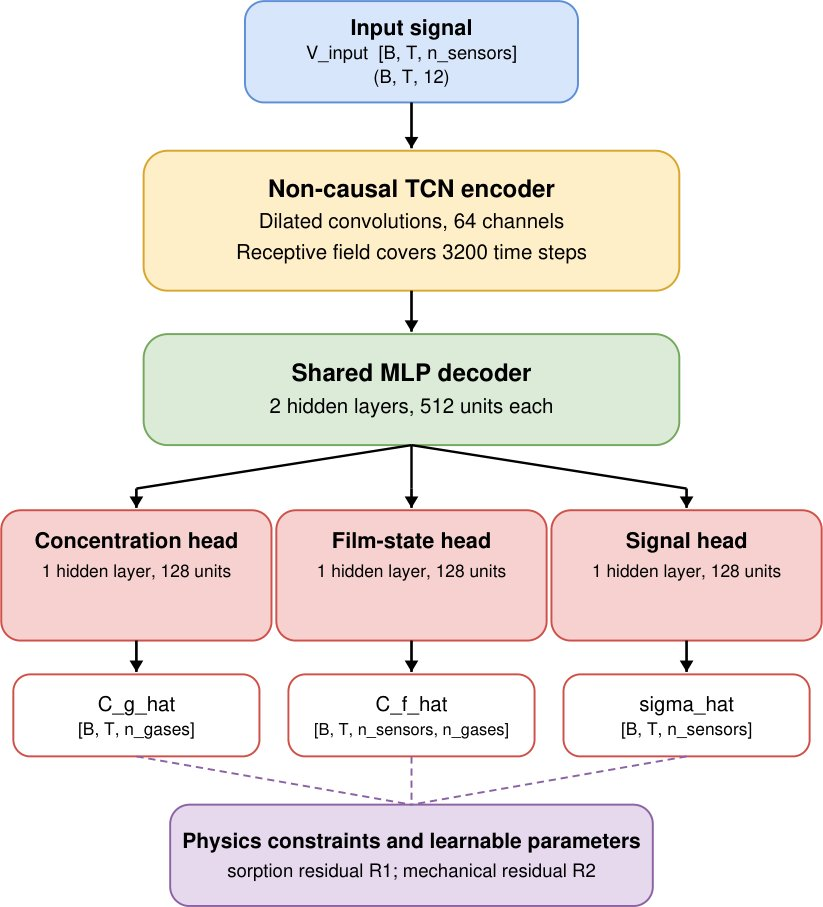

Мембраналық сенсорлар өз көрсеткіштерін полимер механикасы арқылы тексеруді үйренді

Газ датчиктері зертханадан тыс қолданылғанда қоспаның нақты концентрациясы белгісіз болатындықтан, өлшеу дәлдігін тексеру күрделі мәселе. Инженерлер газ құрамын бағалаумен қатар, сенсордың механикалық реакциясын қатар жаңғыртатын динамикалық инверсия моделін ұсынды. Сорбция кинетикасы мен полимер мембранасының тұтқыр-серпімділік теңдеулері жүйеге өзін-өзі тексеру қасиетін берді. 12 арналы MSS массивіндегі сынақтар алгоритмнің жеке арнадағы сезгіштік ауытқуларын дәл анықтайтынын көрсетті.
Басты ойлар
- 12 арналы MSS жүйесі су мен этанолды сорбция кинетикасы мен SLS серпімділік теңдеулері арқылы ажыратады.
- Кинетика және механика шектеулері нейрожеліге MDMM әдісімен автоматты түрде енгізілген.
- Сенсор ақаулары мен нөлдік дрейф синтезделген кернеудің нақты сигналмен сәйкессіздігі арқылы әшкереленеді.
Толығырақ
Зерттеу негізіне беттік механикалық кернеуді тіркейтін мембраналық сенсорлар массиві (MSS) алынды, ол 12 тәуелсіз химиялық сезгіш жабыны бар үш чиптен құралған. Су мен этанол булары сіңірілгенде жұқа қабық көлемдік ұлғаюға ұшырап, аз деформациялар кезінде \varepsilon = (v/3)Cf өсім береді, мұндағы v — сорбаттың меншікті көлемі, ал Cf — қабықтағы газ концентрациясы. Қабықтың кернеулі-деформациялық күйі стандартты сызықты тұтқыр-серпімді дене (SLS) теңдеуімен сипатталады: aur EU (d\varepsilon/dt) + ER \varepsilon = aur (d\sigma/dt) + \sigma, мұнда EU — лездік серпімділік модулі, ER — релаксацияланған модуль, aur — механикалық релаксация уақыты.
Кері есеп TCN уақыттық конволюция желісі мен көпқабатты перцептрон (MLP) арқылы жүзеге асырылып, \hatCg газ концентрациясын, жасырын фазадағы \hatCf күйін және жаңғыртылған \hat\sigma механикалық кернеуін есептейді. Оқыту үдерісі түрлендірілген дифференциалдық көбейткіштер әдісімен (MDMM) орындалды, бұл ретте сорбция R1 және серпімділік R2 физикалық қалдықтары қатаң шектеу ретінде сақталады. Егер арналардың бірінде дрейф немесе ақау пайда болса, есептелген \hat\sigma нақты өлшенген \sigma сигналынан ажырап, ақауды сыртқы калибрлеусіз жедел табады.
Шектеулер
Жұмыс зертханалық деңгейдегі су мен этанолдың екі компонентті қоспасында сыналған, өндірістік күрделі газдардағы тиімділігі қосымша зерттеуді талап етеді.
Мақаланың толық талдауы
Түйіндеме
Газ сенсорларының массивтері өздерінің жауап беру үлгілері (response patterns) негізінде газ қоспаларының құрамын бағалауға мүмкіндік береді. Мұндай жүйелерді зертханадан тыс жерде пайдалану кезіндегі басты мәселе — газдардың нақты концентрациясының белгісіздігі, бұл нәтижелердің сенімділігін тексеруді қиындатады. Авторлар физикалық шектеулері бар нейрондық желіні (physics-constrained neural network) әзірледі, ол уақыт өте келе өзгеретін газ концентрацияларын бағалайды және сенсор сигналдарын бір мезгілде қалпына келтіреді.
Түсіндірме
Физикалық шектеулері бар нейрондық желі — бұл машиналық оқыту моделі, оған физика заңдары (бұл жағдайда сорбция және механика теңдеулері) енгізілген, бұл модельге шындыққа қайшы нәтижелерді шығаруға жол бермейді.
Әдіс он екі арналы мембраналық типтегі беттік кернеу сенсорларының массивінде сыналды. Тәжірибе барысында жүйе уақыт өте келе өзгеретін су-этанол қоспаларының әсеріне ұшырады.
Модель қоспаның екі компоненті үшін де концентрация профильдерін бастапқы сигналдар негізінде сәтті қалпына келтірді. Зерттеушілер бір арнадағы жасанды ығысулар (offsets) мен сезімталдықтың өзгеруі өлшенген және қалпына келтірілген сигналдар арасындағы сәйкессіздіктер арқылы анықталатынын көрсетті. Сонымен қатар, өлшеу жазбаларының бір бөлігін жою немесе ауыстыру жағдайлары сорбция және механика теңдеулерінің бұзылуы арқылы анықталды.
Маңызды
Әзірленген әдіс бір ғана өлшеу негізінде автоматты түрде өзін-өзі тексеру мүмкіндігімен көп компонентті газдарды нақты уақыт режимінде талдауға мүмкіндік береді.
Абайлаңыз
Зерттеу әдістің зертханалық қондырғыдағы демонстрациясы болып табылады; алгоритмді бақылауға келмейтін шу деңгейі жоғары далалық жағдайларға қолдану қосымша тексеруді талап етеді.
Кварцтық кристалды микротаразылар, беттік акустикалық толқын құрылғылары және мембраналық беттік кернеу датчиктері (MSS) сияқты химиялық сенсорлар зертханадан күнделікті қолданысқа енуде. Қоршаған ортаны бақылау немесе тыныс алу арқылы денсаулықты тексеру сияқты салаларда датчиктер үздіксіз жұмыс істеуі керек, бұл жиі калибрлеуге мүмкіндік бермейді. Дәстүрлі әдістер сенсордың динамикалық жауабын статикалық белгілерге дейін қысқартады, бұл калибрлеуді жеңілдеткенімен, кинетикалық ақпаратты жоғалтады. Бұл жұмыста сенсор статикалық түрлендіргіш емес, динамикалық жүйе ретінде қарастырылады, мұнда сигнал газ бен рецепторлық қабат арасындағы өзара әрекеттесудің уақыт бойынша жазбасы болып табылады.
Маңызды
Ұсынылған әдіс сенсордың динамикалық жауабын пайдалана отырып, нақты уақыт режимінде газ концентрациясын бағалауға және сыртқы эталондарсыз деректердің сенімділігін тексеруге мүмкіндік береді.
Динамикалық өлшеулердегі негізгі мәселе — әсер ету тарихына тәуелділік (жад эффектісі) және көп компонентті қоспаларды ажыратудың күрделілігі. Авторлар «шектелген динамикалық инверсия» (constrained dynamical inversion) тәсілін қолданады. Бұл модельде нейрондық желі кері есепті шешеді және ол сорбция мен тұтқыр-серпімді релаксация теңдеулеріне [20] қатаң бағынуы тиіс.
Түсіндірме
Шектелген динамикалық инверсия — бұл жүйенің кіріс параметрлерін (газ концентрациясын) физика заңдарына (сорбция кинетикасы) бағынатын нейрондық желі арқылы қалпына келтіру әдісі, ол физикалық тұрғыдан мүмкін емес нәтижелерді жоққа шығарады.
Алгоритм келесідей жұмыс істейді: нейрондық желі «шикі» көп арналы сигналды қабылдайды және бір уақытта үш шаманы есептейді: газ фазасындағы концентрация \hatCg, пленканың жасырын күйі \hatCf және сигналдың өзін реконструкциялау \hat\sigma. Барлық үш параметр физикалық теңдеулермен байланысты болғандықтан, өлшенген σ сигнал мен реконструкцияланған \hat\sigma арасындағы сәйкестік ішкі тексеру критерийі ретінде қызмет етеді (1-сурет). Егер арна зақымдалған болса, реконструкция кіріс деректеріне сәйкес келмей қалады, бұл ақаулықты анықтауға мүмкіндік береді.
Абайлаңыз
Әдіс 12 арналы MSS массивінде су мен этанол қоспаларының әсерімен сыналған; басқа типтегі газдарға немесе әртүрлі физикалық жағдайларға ауыстыру қосымша тексеруді талап етеді.
Авторлар ұсынылған жүйе концентрация траекторияларын қалпына келтіріп қана қоймай, аномалияларды дербес анықтайтынын көрсете отырып, химиялық талдауды үлгілерді тану міндетінен жүйе күйін логикалық қорытындылау міндетіне айналдырады.
Реконструкция моделі (1c-сурет) кіріс деректер ретінде көп арналы уақытша сигналдарды σ(t) қабылдайды. Уақытша конволюциялық нейрондық желі (TCN) уақытша белгілерді кодтайды, ал ортақ көп қабатты перцептрон (MLP) оларды әр уақыт қадамында үш шығысқа декодтайды: болжамды газ фазасының концентрациясы \hatCg, рецепторлық пленкалардың ішкі күйін білдіретін пленка фазасының концентрациясы \hatCf және өлшенген сигналдың өзін реконструкциялау \hat\sigma.
Түсіндірме
TCN (уақытша конволюциялық желі) — бұл уақыт бойынша тізбектерді талдауға арналған нейрондық желі архитектурасы.
Бұл үш шығыс сезу процесінің басқарушы теңдеулері арқылы өзара байланысқан, олар оқыту кезінде шектеу ретінде қолданылады. Сорбция кинетикасы газ молекулаларының рецепторлық пленкаға сіңуін анықтайды:
\frac{d\hat{C}_f}{dt} = \frac{1}{ au_s} (K_p\hat{C}_g - \hat{C}_f)
мұндағы τ_s — сорбцияның уақыт тұрақтысы, K_p — бөліну коэффициенті. Сіңу пленканың ісінуіне әкеледі және кіші деформация болжамында пайда болған деформация \hat\varepsilon = (v/3)\hatCf тең, мұндағы v — сорбцияланған заттың меншікті көлемі. Механикалық жауап стандартты сызықтық қатты дене (SLS) моделімен басқарылады:
au_r E_U \frac{d\varepsilon}{dt} + E_R\varepsilon = au_r \frac{d\sigma}{dt} + \sigma (2)
Мұнда E_U және E_R — сәйкесінше релаксацияланбаған және релаксацияланған серпімділік модульдері, τ_r — механикалық релаксацияның уақыт тұрақтысы. Бұл теңдеулер C_g → C_f → σ тізбекті тәуелділігін орнатады.
Маңызды
R₁ және R₂ физикалық шектеулері концентрациялар мен механикалық жауапты байланыстырып, модельдің барлық шығыстары арасындағы өзара сәйкестікті қамтамасыз етеді.
Оқыту барысында теңдеулер тікелей шешілмейді, тек R₁ және R₂ қалдықтары (3 және 4-теңдеулер) ретінде енгізіледі. Авторлар қалдықтарды шығын функциясына бекітілген салмақтармен қосудың орнына, модификацияланған дифференциалды мультипликаторлар әдісін (MDMM) қолданады. Бұл алгоритмге мультипликаторларды автоматты түрде бейімдеуге және Лагранж функциясының ершік нүктесін табуға мүмкіндік береді, бұл физикалық заңдардың қатаң орындалуын қамтамасыз етеді. Осылайша, желі LCg = MSE(Cg, \hatCg) және LV = MSE(\sigma, \hat\sigma) деректер қателерін минималдайды, бұл ретте қалдықтар минималды деңгейде қалуы шарт. Пленка фазасындағы \hatCf концентрациясы ешқандай тікелей эксперименталды бақылаусыз, тек осы физикалық шектеулер арқылы анықталады.
Абайлаңыз
MDMM әдісі өте маңызды, себебі ол модельді физикалық процестерге қатаң бағынуға мәжбүрлейді, бұл сигналды реконструкциялауды деректердің тұтастығын тексеру үшін тәуелсіз құрал ретінде пайдалануға мүмкіндік береді.
Зерттеу ұсынылған модельдің көп арналы сенсорлардың «шикі» сигналдары негізінде газдардың динамикалық концентрациясын қалпына келтіру қабілетін бағалайды. Эксперименттік қондырғы 12 мембраналық беттік керілу датчигінен тұрады, олар әртүрлі сорбциялық және тұтқыр-серпімді жауаптарды қамтамасыз ету үшін 12 түрлі рецепторлық қабатпен қапталған. Сынақ қоспасы ретінде азот (N₂) арқылы барботаждалған су мен этанол булары пайдаланылды. Су буы газ талдауындағы негізгі кедергі келтіруші фактор болғандықтан, модель оның үлесін этанолмен тең дәрежеде есепке алады. Сигналдар пішіні тікбұрышты, ара тісті, кері ара тісті және Гаусс үлестірімі түрінде өзгертілді. Деректер жиынтығы оқыту үшін 150 және сынақ үшін 50 тізбекті қамтиды, олар синхронды (ортақ толқын пішіні) және асинхронды (тәуелсіз толқын пішіндері) режимдерге бөлінген.
Түсіндірме
«Шикі» сигналдар әдісі деректерді алдын ала сүзгіден өткізбей немесе шуды өтемей, тікелей датчиктерден өңдеуді көздейді, бұл модельден физикалық жауаптарды жоғары дәлдікпен түсіндіруді талап етеді.
2a, b-суреттерде көрсетілгендей, модель концентрациялардың уақытша құрылымын, соның ішінде шыңдар мен сигнал пішіндерін дәл қайта жасайды. Ең үлкен ауытқулар күрт өзгеретін шекараларда байқалады, мұнда концентрацияның жылдам өзгеруі сенсордың сорбциялық жауап беру жылдамдығынан асып түседі. Бұл калибрлеу үшін жиі қолданылатын тікбұрышты импульстердің динамикалық реконструкция үшін оңтайлы болмауы мүмкін екенін көрсетеді. 2c, d-суреттерге сәйкес, қателік синхронды режимде ±2% және асинхронды режимде ±5% шамасында болып, 25%-дан жоғары концентрацияларда жүйелі ауытқу байқалады.
Маңызды
Модель белгіленген толқын пішініне тәуелсіз газ концентрациясының динамикасын 5%-ға дейінгі дәлдікпен қалпына келтіреді.
Абайлаңыз
Нәтижелер бақыланатын қоспалары бар зертханалық модельде алынған; күтпеген шуы бар нақты жағдайларға көшіру қосымша тексеруді талап етеді.
3-суретте әртүрлі уақыт терезелерінде (толық, жартылай және ширек ұзындықта) газ концентрацияларының, пленка фазасы күйлерінің және сенсор жауабының бірлескен реконструкциясы көрсетілген. Модель кіріс терезелері қысқарған кезде де нәтижелердің үйлесімділігін сақтайды, бұл алгоритмнің тұрақтылығын растайды.
3a,b-суреттерде толық кіріс ұзындығындағы өкілдік тест тізбегі үшін реконструкция көрсетілген. Қайта құрылған \hat\sigma сигналы барлық арналар бойынша өлшенген кіріс сигналын дәл қадағалайды. Есептелген пленка концентрациялары \hatCf газ фазасындағы \hatCg концентрацияларына қатысты уақытша кідірісті көрсетеді, бұл (1)-теңдеумен белгіленген шекті сорбция уақытын көрсетеді. Заттар үшін сипаттамалық уақыт айырмашылықтары оқыту барысында алынған сорбция параметрлеріне сәйкес келеді.
Маңызды
Модель тиімді түрде серпімді жауапқа дейін қысқарады, өйткені модульдер қатынасы E_U/E_R бірлікке жақындайды және сорбция уақытының константасы τ_s жылдам концентрация өзгерістерін сүзеді.
Зерттелген тұтқыр-серпімді (viscoelastic) параметрлер дегенерацияны көрсетеді: E_U/E_R модульдер қатынасы барлық арналар бойынша бірлікке жақын. Тұтқыр-серпімді модель қазіргі жағдайда серпімді модель сияқты жұмыс істейді, өйткені τ_s сорбция уақытының константасы жылдам өтпелі процестерді сүзіп, тұтқыр-серпімді релаксацияны анықтауға мүмкіндік бермейді. Дегенмен, тұтқыр-серпімді шектеу \hatCf o \hat\sigma жолында уақытша тегістікті қамтамасыз ету үшін маңызды. Кіріс терезесі толық ұзындықтың 1/2 (3c,d-сурет) немесе 1/4 (3e,f-сурет) бөлігіне дейін қысқартылғанда, траекториялар орталық бөлікте дәлдігін сақтайды, бұл әдістің кіріс ұзақтығына тәуелсіздігін растайды.
Түсіндірме
Қалдық (residual) — бұл модель болжамы мен нақты деректер арасындағы айырмашылық, ол сыртқы эталонсыз жүйенің сәйкестігін көрсететін индикатор болып табылады.
Авторлар қайта құрылған сигнал мен физикалық қалдықтар сенсорлардағы ауытқуларды екі түрлі басқарылатын бұзылыстар арқылы анықтай алатынын тексереді.
Әр тест үшін бір арна кездейсоқ таңдалады (4a-сурет) және z-нормаланған кеңістікте бұзылыстар енгізіледі: (i) ығысу (offset) σ'_j → σ'_j + δ, мұнда δ \in [0, 1] (4b-сурет) және (ii) масштабтау (scale) σ'_j → α σ'_j, мұнда α \in [0.2, 1] (4d-сурет). Бұл бұзылыстар сенсорлардың типтік ақауларын: рецепторлардың ластануын, термиялық ығысуды немесе күшейту қателерін имитациялайды.
Абайлаңыз
Модель бұзылған сигналды оқытылған көптүрлілікке (manifold) проекциялайды, сондықтан \hat\sigma мен σ арасындағы сәйкессіздік қателікті есептелетін индикаторға айналдырады.
4c,e-суреттер бұзылыстар кезінде \hatCg мен \hatCf тұрақты қалатынын, ал \hat\sigma бұзылған кірістен ауытқитынын көрсетеді. Сәйкессіздікті сандық бағалау үшін I\sigma = extMSE(\sigma, \hat\sigma) = \frac1N \sumt=1N (\sigmai - \hat\sigmai)2 көрсеткіші енгізіледі. 4g-суретте көрсетілгендей, Iσ ығысу артқан сайын сызықтық түрде өседі. Масштабтау үшін (4h-сурет) жылдам өсу және кейінгі қанығу байқалады. Әдіс ақаулы арнаны анықтауға мүмкіндік береді, өйткені оның Iσ мәні басқа арналарға қарағанда айтарлықтай жоғары.
Сигнал амплитудасының өзгеруі Iσ метрикасы арқылы оңай анықталады, алайда кейбір аномалиялар сигнал деңгейінде байқалмауы мүмкін. Мұны көрсету үшін авторлар «сегментті өшіру» (deletionsplice) әдісін қолданды: тесттік тізбектен уақытша фрагмент алынып тасталып, қалған бөліктері біріктіріледі (Сурет 5a). Мұндай үзілістер деректер буфері толып кеткенде немесе датчик қайта іске қосылғанда орын алады. Сигнал мәндері оқыту таратылымына сәйкес келетіндіктен, модель \hat\sigma-ны қатесіз қалпына келтіреді және Iσ базалық деңгейде қалады (Сурет 5b).

Маңызды
R₁ және R₂ физикалық қалдықтары сигнал статистикасы арқылы анықтау мүмкін емес деректер үзілістерін табуға мүмкіндік береді.
Алайда, модель шығыстары негізінде есептелген R₁ (сорбция) және R₂ (вискоэластикалық) физикалық қалдықтары үзіліс нүктесінде күрт өседі (Сурет 5c). Уақытша үздіксіздіктің бұзылуы (1)–(2) теңдеулеріне қайшы келеді және бұл қалдықтар арқылы анықталады. Тесттік жиынтық бойынша жылу карталары (heatmaps) бұл «ыстық нүктелердің» тұрақты екенін растайды (Сурет 5d).
Түсіндірме
Физикалық қалдық — бұл модель болжамының жүйенің негізгі физикалық заңдылықтарынан ауытқу дәрежесі.
«Сегментті алмастыру» (substitution splice) тестінде 70–90 с аралығы басқа жазбадағы сәйкес бөлікпен алмастырылады (Сурет 5e). Барлық деректер шынайы болғанымен, жалғану нүктелерінде динамикалық үзілістер пайда болады. Бұл жағдайда Iσ орташа есеппен 7%-дан аз өседі, бұл базалық шу шегінде қалады, ал R₁ және R₂ екі өңдеу орнын да нақты көрсетеді (Сурет 5f). Осылайша, физикалық сәйкестік тек статистикалық әдістермен анықтау мүмкін емес деректерді қолдан жасау әрекеттерін әшкерелейді.
Тәжірибелер Iσ және R₁/R₂ әртүрлі аномалия түрлеріне жауап беретінін көрсетеді. Сигнал ығысқанда немесе масштабталғанда Iσ өседі, ал R₁ және R₂ тұрақты қалады, себебі модель бұзылған кірісті ішкі динамиканы бұзбай оқытылған көптүрлілікке (manifold) проекциялайды. Үзілістер (splice) кезінде жағдай керісінше: Iσ үзілісті көрмейді, ал физикалық қалдықтар оны тікелей анықтайды. Олар бірге көп деңгейлі диагностиканы құрайды: Iσ жаһандық таратылым ығысуларын, ал R₁ және R₂ динамиканың жергілікті бұзылуларын тіркейді.
Талқылау
Біз көп арналы датчик сигналдары негізінде газ қоспаларының уақыт бойынша өзгеретін концентрацияларын қалпына келтіретін шектелген динамикалық инверсия жүйесін ұсындық. Жүйе белгіленген толқын пішінін, алдын ала анықталған кіріс ұзақтығын немесе тепе-теңдік белгілерін талап етпейді. Модель синхронды және асинхронды араласу жағдайында концентрация траекторияларын тұрақты қалпына келтіреді.
Маңызды
Модель датчик жауабын \hat\sigma және концентрацияларды \hatCg бір мезгілде қалпына келтіру арқылы өздігінен тексеру функциясын жүзеге асырады.
Өздігінен тексеру екі әдіспен орындалады: сигнал сәйкессіздігінің көрсеткіші Iσ (жаһандық ауытқуларды анықтайды) және физикалық қалдықтар R₁ мен R₂ (жергілікті динамикалық бұзушылықтарды тіркейді). Бұл әдістер эталондық деректерсіз қателіктерді анықтауға мүмкіндік береді.
Диагностика және деректердің тұтастығы
Эксперименттер диагностикалық құралдар қателіктің себебіне емес, физикалық сәйкессіздік класына жауап беретінін көрсетті. Мысалы, арнадағы ығысу датчиктің ластануынан немесе оқу тізбегіндегі қателіктен туындауы мүмкін. Жүйе мәселені локализациялайды, бірақ себебін анықтау сыртқы контекстті талап етеді. Техникалық қызмет көрсетуде Iσ датчик сезімталдығының төмендеуін анықтау үшін қызмет етеді. Деректердің тұтастығын тексеруде физикалық қалдықтар деректерді өшіру және ауыстыру жағдайларын сәтті анықтады.
Абайлаңыз
Жүйе толық аутентификация жүйесі емес, бірақ қосымша жабдықсыз физикалық негізделген тексеруді қосады.
Шектеулер мен перспективалар
Ағымдағы тәжірибелер тек су мен этанолдың бинарлы қоспаларымен шектелген. Теориялық тұрғыдан күрделірек қоспаларға көшу мүмкін, бірақ белгілі бір арналар саны үшін қанша газ компонентін анықтауға болатыны ашық сұрақ болып қала береді. Қазіргі жағдайда (EU/ER ≈ 1) SLS моделі серпімді жауапқа теңеседі.
Түсіндірме
Физикалық қалдықтар — бұл модель болжамы мен нақты өлшем арасындағы айырмашылық, ол физикалық заңдылықтардың бұзылуын көрсетеді.
Модель оқу деректері аясындағы динамиканы дұрыс сипаттайды деп болжанады. Егер нақты динамика өзгерсе, физикалық қалдықтар Iσ өзгермей тұрып артуы мүмкін. Сондай-ақ, жүйе физикалық заңдарға толық сәйкес келетін жалған жазбаларды (мысалы, алдын ала жазылған таза деректерді қайта ойнату) анықтай алмайды. Болашақта күрделірек қоспалар мен автоматтандырылған шешім қабылдау хаттамаларын интеграциялау жоспарланған.
Әдістер
5.1 Сенсорлық массив және эксперименттік өлшеулер
Сенсорлық массив үшін он екі түрлі полимерлі рецептормен қапталған MSS чиптері қолданылды: PVF, PS, PCL, PMMA, CAB, TENAX, P4MS, PSF, PVP, PVC, PMVE және PBA. Полимерлер N,N-диметилформамид (DMF) немесе 1,1,2,2-тетрахлорэтанда (TCE) ерітіліп, IJHBS-300 саптамасы бар струйлы принтер (LaboJet-500SP) көмегімен чиптерге жағылды. Еріткіш 60 °C температурада буланып, үлгілер 24 сағат бойы бөлме температурасында кептірілді. Өлшеу камерасына үш төрт арналы чип орнатылды. Сенсор сигналдары 100 Гц жиілікте жазылып, талдау үшін 20 Гц-ке дейін төмендетілді.
Түсіндірме
Струйлы бүрку (inkjet spotting) — полимер ерітіндісін сенсор бетіне микродозалармен дәл тарату әдісі.
5.2 Газ беру хаттамалары
Су және этанол буларының динамикалық бинарлы қоспалары үш массалық шығын реттегіші (MFC) және тасымалдаушы газ ретінде азот (N2) көмегімен жасалды. Қоспа құрамы төрт түрлі толқын пішіні (тікбұрышты, ара тісті, кері ара тісті және Гаусс) бойынша реттелді. Әр өлшеу циклі 240 с созылды: тазарту (20 с), белсенді инъекция (120 с) және қорытынды тазарту (100 с). Екі режим қолданылды: синхронды және асинхронды араластыру. Оқыту жиынтығы 150, тест жиынтығы 50 тізбектен тұрады. Деректер 160 с (3200 уақыт қадамы) дейін қысқартылды.
5.3 Физикаға негізделген модель
Динамика екі кезеңнен тұрады. Сорбция кинетикасы (1-теңдеу) масса алмасуды τ_s және K_p параметрлерімен сипаттайды. Механикалық жауап стандартты сызықтық қатты дене моделіне (2-теңдеу) негізделеді және \varepsilon = (v/3) Cf қатынасы арқылы пленка концентрациясымен байланысады. n сенсор мен g газ үшін әр жұпқа τ_s, K_p және әр сенсорға вискоэластикалық параметрлер (τ_r, E_U, E_R) жеке оқытылатын шамалар болып табылады.
5.4 Нейрондық желі архитектурасы
Модель 11 қабатты каузалды емес уақытша конволюциялық желіден (TCN) тұрады (кеңейту факторлары 20, \dots, 210, ядро өлшемі 3, 64 арна). Рецептивті өріс 4095 уақыт қадамын қамтиды. TCN шығысы 512 нейронды екі жасырын қабаты бар ортақ MLP арқылы декодталады және \hatCg, \hatCf, \hat\sigma болжау үшін 128 нейронды үш шығыс блогына қосылады. Әр қабаттан кейін dropout (p=0.1) қолданылады.
5.5 Оқыту мақсаттары мен шектеулер
Мақсатты функция — сигналды реконструкциялау LV = MSE(V, \hatV) және концентрацияны болжау LCg = MSE(Cg, \hatCg) қателерінің қосындысы. Физикалық қалдықтар R₁, R₂ және E_U/E_R ≥ 1 шектеуі модификацияланған дифференциалды мультипликаторлар әдісі (MDMM) арқылы енгізіледі. Оңтайландыру Adan алгоритмі және ReduceLROnPlateau кестесі (бастапқы жылдамдық 10⁻³, минималды 10⁻⁵) көмегімен жүзеге асырылады. Оқыту 800 эпоха шыдамдылық шегінде тоқтатылады.
5.6 Пертурбация эксперименттері
Оқытудан кейін желі параметрлері қатырылады. Жаһандық пертурбациялар: ығысу (базис дрейфін имитациялау үшін δ \in [0, 1] қосу) және масштабтау (сезімталдықтың деградациясын имитациялау үшін α \in [0.2, 1] көбейту). Сплайс-пертурбациялар: уақытша сегментті өшіру және орын алмастыру (70–90 с сегментін басқа тізбекпен алмастыру), бұл жазбаларды өңдеуді имитациялайды.
5.7 Бағалау метрикалары
Концентрацияны реконструкциялау дәлдігі барлық тесттік тізбектер бойынша қалпына келтірілген және нақты концентрация траекториялары арасындағы орташа квадраттық қателік (RMSE) пен детерминация коэффициенті (R²) арқылы бағаланады. Сигналдың сәйкессіздігі Iσ (5-теңдеу) әр арна үшін өлшенген кіріс сигналы мен реконструкцияланған сигнал арасындағы орташа квадраттық қателікті сандық түрде анықтайды. Физикалық қалдықтар R₁ және R₂ (3–4-теңдеулер) әр траектория бойымен нүктелі түрде бағаланады.
Түсіндірме
RMSE қалпына келтірілген мәндердің нақты мәндерден орташа ауытқуын көрсетеді, ал R² модель түсіндіре алатын дисперсия үлесін сипаттайды.
Арналар бойынша RMSE, R² мәндері және қателіктердің кумулятивті таралуы 5-қосымша жазбада берілген.
Кесте 1.




Суреттің толық сипаттамасы
S2-сурет. Әртүрлі кездейсоқ бастапқы мәндері бар бес тәуелсіз іске қосу нәтижелері бойынша физикалық модель үшін оқыту және валидациялау шығындарының қисықтары. Тұтас сызықтар: медиана; штрихталған аймақтар: минимум мен максимум аралығы. Жоғарғы қатар: жалпы шығындар, LC концентрация шығындары және LV сигналды реконструкциялау шығындары. Төменгі қатар: R2 1 (сорбция) және R2 2 (вязкосерпімділік) физикалық қалдықтарының квадраттары.


Суреттің толық сипаттамасы
S7-сур. Бес тәуелсіз оқыту циклі бойынша жинақталған әрбір датчик арнасы үшін қалпына келтірілген физикалық параметрлер (орташа ± стандартты ауытқу). Жоғарыда: этанол мен су үшін сорбцияның уақыт тұрақтысы 𝜏𝑠. Ортада: модульдер қатынасы 𝐸𝑈/𝐸𝑅. Төменде: механикалық релаксацияның уақыт тұрақтысы 𝜏𝑟.

Суреттің толық сипаттамасы
S8-сур. Үш модель нұсқасы бойынша репрезентативті тест тізбегін реконструкциялау. Жоғарғы қатар: этанол мен су үшін нақты деректердің (тұтас сызық) үстіне салынған 𝐶𝑔 болжамдары (үзік сызық). Ортаңғы қатар: бір репрезентативті арна (PVF) үшін кіріс деректеріне қатысты реконструкцияланған ̂𝜎 сигналы. Төменгі қатар: екі газ түрі үшін үлдір фазасындағы концентрацияның өзгеруі Δ𝐶𝑓 = 𝐶𝑓(𝑡) − 𝐶𝑓(0).

Суреттің толық сипаттамасы
S9-сур. 50 қалыпты тест тізбегіндегі өзін-өзі тексеру метрикаларының ядролық тығыздық бағалаулары. Солда: сигналдың сәйкессіздігі 𝐼𝜎. Ортада: орташа сорбциялық қалдық /ℛ1/. Оңда: орташа тұтқыр-серпімді қалдық /ℛ2/. Мәндер әрбір тізбектегі әрбір арна үшін есептелген (әр модель үшін 600 мән).


Суреттің толық сипаттамасы
S12-сур. Кіріс бұзылыстары кезіндегі ℛ1 сорбциялық қалдық шамасы. (a, c) ℛ1 орташа мәнінің ығысу (a) және күшейту (c) бұзылыс шамасының функциясы ретіндегі көрсеткіші. Штрихталған аймақтар стандартты ауытқуды білдіреді. (b, d) Ығысу (b) және күшейту (d) шарттары үшін таңдалған бұзылыс шамаларындағы ℛ1 таралуы. Күлгін түс: бұзылған арна; сұр: бұзылмаған арналар; қою сұр: базалық деңгей (бұзылыссыз).


Суреттің толық сипаттамасы
S14-сур. 𝐼𝜎 және физикалық қалдық шамалардың өзара толықтырғыштығын көрсететін тізбектен фрагментті жою. Сол жақ баған: жойылған фрагменті бар тізбек (t=85 с кезінде 100 нүкте жойылған, қызыл штрихталған сызық). Оң жақ баған: қалыпты эталондық тізбек (қызыл штрихталған жолақ жойылған сегментті көрсетеді). Жоғарыдан төмен қарай жолдар: кіріс сигналы, қайта құрылған 𝜎, уақытқа тәуелді 𝐼𝜎(𝑡), қайта құрылған ̂𝐶𝑔, ℛ1 сорбциялық қалдық шамасы және ℛ2 тұтқыр-серпімді қалдық шамасы. t=0 кезіндегі KDE таралуы қалыпты тест деректері бойынша базалық таралуды көрсетеді. Үзіліс нүктесі ℛ1 және ℛ2-де күрт секірістерді тудырады, бірақ 𝐼𝜎-да айтарлықтай өзгерістер тудырмайды.


Суреттің толық сипаттамасы
S16-сур. Жою (жоғарғы жол) және алмастыру (төменгі жол) үшін арна бойынша түйісуді анықтау статистикасы. Қораптар 50 тест тізбегі бойынша түйісу(лер)ден ±1 с аралығындағы ең жоғары абсолютті қалдықтың таралуын көрсетеді, ℛ1 сорбциялық қалдық шамасы (екі газ бойынша максимум, сол жақ баған) және ℛ2 тұтқыр-серпімді қалдық шамасы (оң жақ баған) үшін. Сұр ромбтар әрбір жазбаның қалған бөлігі бойынша абсолютті қалдықтың 99-перцентилінің медианасын белгілейді. Ескертпе: логарифмдік шкала.


Зерттеу сызбасы
Препринт әлі рецензиядан өтпеген. Қорытындылар алдын ала.
Дереккөз
| Дереккөз | Санат | Препринт лицензиясы |
|---|---|---|
| arXiv | plates_shells | arxiv |
Дереккөздер
| Дереккөз | Сілтеме |
|---|---|
| Страница препринта | arxiv.org |
| Полный текст (PDF) | arxiv.org |
| DOI | doi.org |
| Метаданные Crossref | api.crossref.org |
| Europe PMC | europepmc.org |